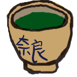
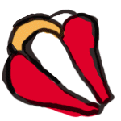
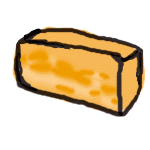
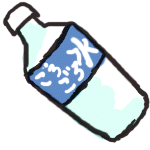
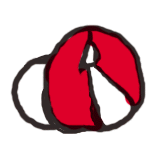
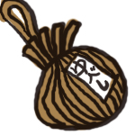

 |
 |
|||
| 奈良の定番土産。近鉄特急で 吉野方面に行くときは、車中の 友として持っていきたい一品。 鮭と鯖があります。 柿の葉すし・平宗 |
近鉄尼辻駅下車20分（ぐらいだったか な？）にある赤膚焼のいくつかの窯元で 体験の作陶や絵付けができる。金額も 手軽な絵付けはおすすめ。後日、自宅 に届く。 赤膚山元窯 古瀬尭三窯 |
奥様雑誌等で、おつかいものと して紹介されることが多い。2月 1日から3月12日までの期間限 定。萬々堂通則で売ってます。 萬々堂通則 |
||
 |
||||
| 吉野、十津川、天川方面のお みやげ。あまごと、あゆがあっ て、おみやげとして喜ばれる一 品。たしか、ぜいたく豆でも売 っていたような・・・ |
亀形石がモデルの薬味入れ。 誰にでも喜ばれ、奈良らしい 土産として、一押し！ ほかにも酒船石のペーパーウ ェイトなどもおすすめ 造形工房 垰 |
古代の味、蘇。牛乳を煮詰め て作った、チーズのようなも のと、言われているが、緑茶 、紅茶にあうお菓子のような かんじ。 西の京地酒処きとら |
||
 |
 |
 |
||
| 名水が多い奈良のなかでも、 一押しの名水。 このネーミングには、首を傾げ たり、飲むのに躊躇させるが、 さすが、名水100選に選ばれた だけあって美味。 (株)名水の里「ごろごろ水」 |
ならまちを散策していると、あちらこちら の軒先にぶら下がっているのが、この 身代わり猿。奈良町資料館前には、こ れでもかってぐらいぶら下がってます。 奈良町資料館 |
ゆずに様々なものを練りこんだ 味噌をつめた昔からの保存食。 近鉄奈良駅近く三条通りにある 、ぜいたく豆、で売っている。 クセがあり苦手というヒトも… おつまみにチーズと共に。 |
||
|
奈良の地ビール、倭王。 |
||||